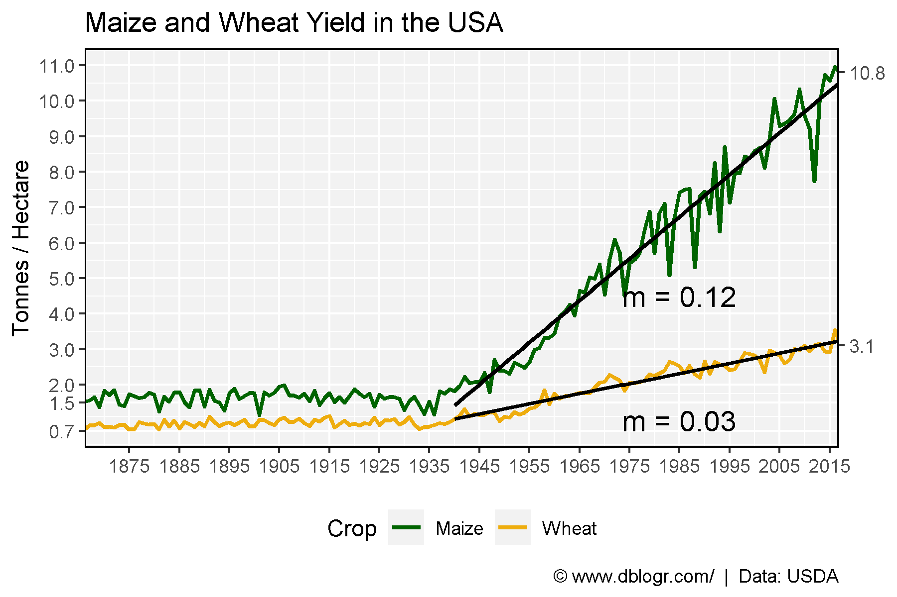
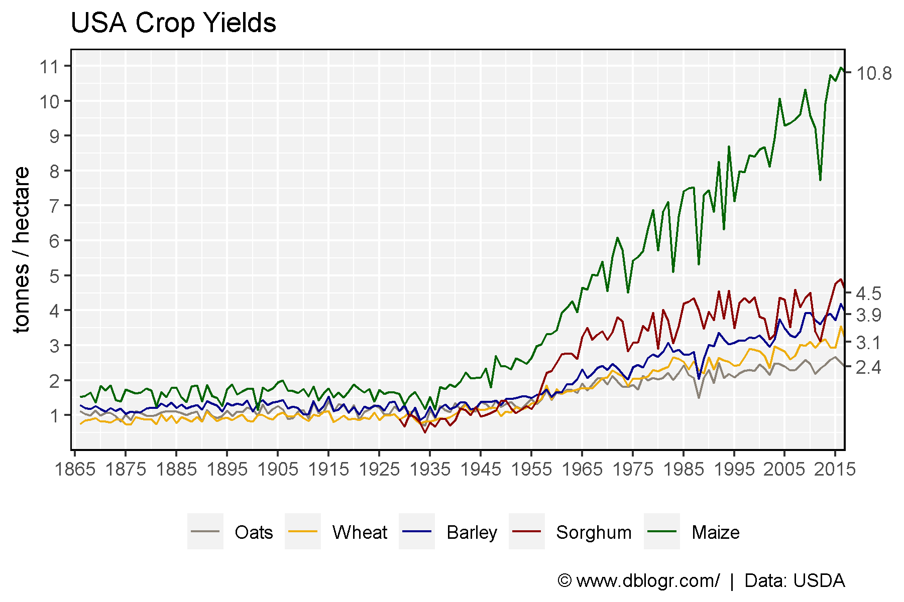
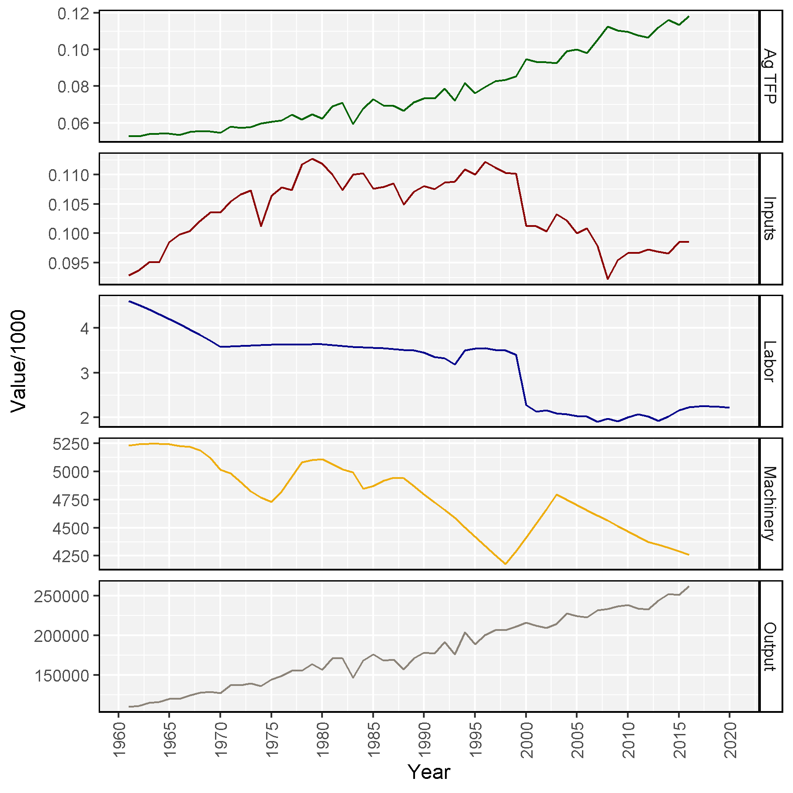

# devtools::install_github("derekmichaelwright/agData")
library(agData) # Loads: tidyverse, ggpubr, ggbeeswarm, ggrepel# Prep data
xx <- agData_USDA_Crops %>%
filter(Crop %in% c("Maize", "Wheat"), Measurement == "Yield")
x1 <- xx %>% filter(Crop == "Maize", Year >= 1940)
x2 <- xx %>% filter(Crop == "Wheat", Year >= 1940)
m1 <- round(summary(lm(data = x1, Value ~ Year))$coefficients[2], 2)
m2 <- round(summary(lm(data = x2, Value ~ Year))$coefficients[2], 2)
xE1 <- xx %>% top_n(-1, Year) %>% pull(Value) %>% round(1)
xE2 <- xx %>% top_n(1, Year) %>% pull(Value) %>% round(1)
# Plot
mp <- ggplot(xx, aes(x = Year, y = Value, color = Crop)) +
geom_line(size = 1 ) +
geom_smooth(data = x1, method = "lm", se = F, color = "Black") +
geom_smooth(data = x2, method = "lm", se = F, color = "Black") +
annotate("text", x = 1985, y = 4.5, size = 5, label = paste("m =", m1) ) +
annotate("text", x = 1985, y = 1, size = 5, label = paste("m =", m2) ) +
scale_y_continuous(breaks = c(xE1, 2:11),
sec.axis = sec_axis(~ ., breaks = xE2)) +
scale_x_continuous(breaks = seq(1865, 2015, by = 10)) +
coord_cartesian(xlim = c(min(xx$Year)+7, max(xx$Year)-7)) +
scale_color_manual(values = c("darkgreen", "darkgoldenrod2") ) +
theme_agData(legend.position = "bottom") +
labs(title = "Maize and Wheat Yield in the USA",
y = "Tonnes / Hectare", x = NULL,
caption = "\xa9 www.dblogr.com/ | Data: USDA")
ggsave("crops_usa_01.png", mp, width = 6, height = 4)
# Prep data
cols <- c("antiquewhite4", "darkgoldenrod2", "darkblue", "darkred", "darkgreen")
xx <- agData_USDA_Crops %>%
filter(Measurement == "Yield") %>%
mutate(Crop = factor(Crop, levels = c("Oats","Wheat","Barley","Sorghum","Maize")))
x1 <- xx %>%
filter(Year %in% c(min(Year), max(Year), 1929)) %>%
select(Crop, Year, Value) %>%
spread(Year, Value)
xE <- xx %>% top_n(1, Year) %>% pull(Value) %>% round(1)
# Plot
mp <- ggplot(xx, aes(x = Year, y = Value, label = Value, color = Crop)) +
geom_line() +
scale_y_continuous(breaks = 1:11, sec.axis = sec_axis(~ ., breaks = xE)) +
scale_x_continuous(breaks = seq(1865, 2015, 10)) +
coord_cartesian(xlim = c(min(xx$Year)+5, max(xx$Year)-7)) +
scale_color_manual(name = NULL, values = cols) +
theme_agData(legend.position = "bottom") +
labs(title = "USA Crop Yields",
x = NULL, y = "tonnes / hectare",
caption = "\xa9 www.dblogr.com/ | Data: USDA")
ggsave("crops_usa_02.png", mp, width = 6, height = 4)
# Prep data
xx <- agData_USDA_TFP %>%
filter(Measurement %in% c("Ag TFP", "Inputs", "Output", "Labor", "Machinery"),
Area == "USA" )
# Plot
mp <- ggplot(xx, aes(x = Year, y = Value/1000, color = Measurement)) +
geom_line() + facet_grid(Measurement~., scales = "free_y") +
scale_x_continuous(breaks = seq(1960, 2020, 5)) +
scale_color_manual(values = rev(cols)) +
theme_agData(legend.position = "none", rotx = T)
ggsave("crops_usa_03.png", mp, width = 6, height = 6)